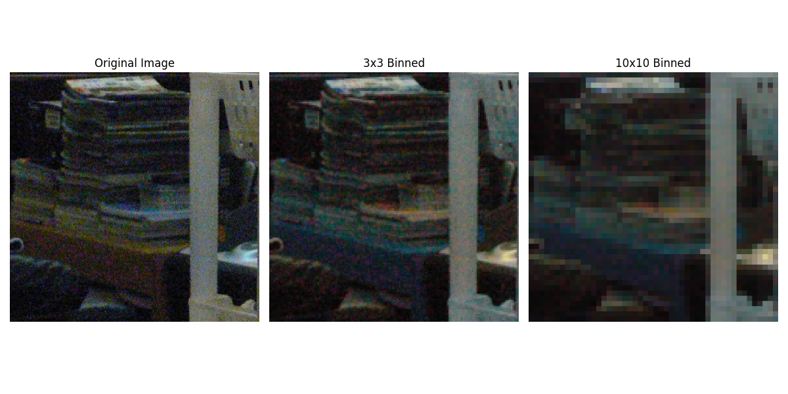

Pixel Binning
Theory
Pixel binning is a technique that reduces image resolution by combining blocks of pixels into a single pixel. This process:
- Reduces noise by averaging pixel values in each block.
- Decreases computational load for subsequent processing.
- Preserves overall image structure and features.
- Is commonly used in image sensors, astronomy, and low-resolution imaging.
Python Code
import cv2
import numpy as np
import matplotlib.pyplot as plt
def pixel_binning(image, bin_size):
"""Reduce image resolution by combining blocks of pixels."""
if bin_size <= 1:
return image
height, width = image.shape[:2]
new_height = (height // bin_size) * bin_size
new_width = (width // bin_size) * bin_size
image = image[:new_height, :new_width]
if len(image.shape) == 3:
binned = image.reshape(new_height // bin_size, bin_size,
new_width // bin_size, bin_size, 3).mean(axis=(1, 3))
else:
binned = image.reshape(new_height // bin_size, bin_size,
new_width // bin_size, bin_size).mean(axis=(1, 3))
return binned.astype(np.uint8)
# Load image
image = cv2.imread('assets/noise.jpg')
image_rgb = cv2.cvtColor(image, cv2.COLOR_BGR2RGB)
# Apply binning
binned_3x3 = pixel_binning(image, 3)
binned_10x10 = pixel_binning(image, 10)
# Resize back to original dimensions for display
binned_3x3_up = cv2.resize(binned_3x3, (image.shape[1], image.shape[0]), interpolation=cv2.INTER_NEAREST)
binned_10x10_up = cv2.resize(binned_10x10, (image.shape[1], image.shape[0]), interpolation=cv2.INTER_NEAREST)
# Display images
plt.figure(figsize=(12, 6))
plt.subplot(1, 3, 1); plt.imshow(image_rgb); plt.title("Original Image"); plt.axis("off")
plt.subplot(1, 3, 2); plt.imshow(binned_3x3_up); plt.title("3x3 Binned"); plt.axis("off")
plt.subplot(1, 3, 3); plt.imshow(binned_10x10_up); plt.title("10x10 Binned"); plt.axis("off")
plt.tight_layout()
plt.show()
Output
Pixel Binning Example:
